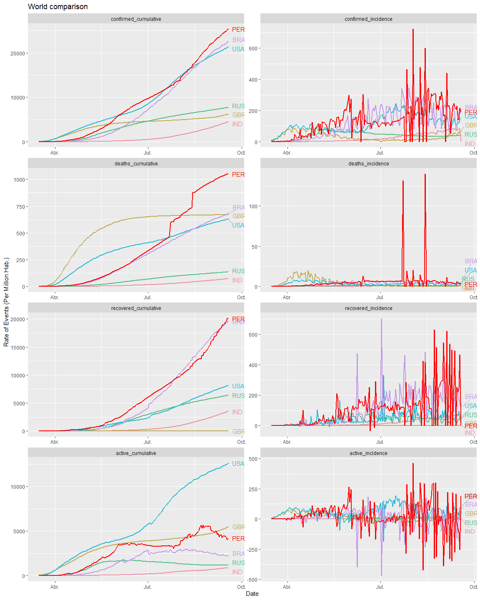

how-to-use.Rmdlibrary(tidyverse)
library(rnaturalearth)
#world data
world_map = ne_countries(returnclass = "sf")
country_metadata <- world_map %>%
filter(str_detect(string = formal_en,
pattern = "United States|US|Brazil|Russia|Peru|India|United Kingdom")) %>%
as_tibble() %>%
select(contains("name"),pop_est,pop_year,lastcensus,economy,income_grp,iso_a3)
#case data
all <- tibble(country_region=c("US","Brazil","Russia","Peru","India","United Kingdom")) %>%
mutate(counts=map(.x = country_region,.f = jhu_sitrep_all_sources))
all %>%
select(-country_region) %>%
unnest(cols = c(counts)) %>%
select(country_region,source,sum_data) %>%
pivot_wider(names_from = source,values_from = sum_data) %>%
mutate(active=confirmed-deaths-recovered) %>%
pivot_longer(cols = -country_region,names_to = "source",values_to = "sum_data") %>%
mutate(country_region=if_else(country_region=="US","United States",country_region)) %>%
rename(name=country_region) %>%
#join
left_join(country_metadata) %>%
select(name,source,sum_data,pop_est,lastcensus#,economy,income_grp
) %>%
mutate(rate=sum_data/pop_est*1e6) %>%
# group_by(source) %>%
arrange(source,desc(rate)) %>%
knitr::kable() %>%
kableExtra::kable_styling(bootstrap_options = "striped", full_width = F)| name | source | sum_data | pop_est | lastcensus | rate |
|---|---|---|---|---|---|
| United States | active | 3968898 | 313973000 | 2010 | 12640.88950 |
| United Kingdom | active | 344382 | 62262000 | 2011 | 5531.17471 |
| Peru | active | 124439 | 29546963 | 2007 | 4211.56652 |
| Brazil | active | 461851 | 198739269 | 2010 | 2323.90409 |
| Russia | active | 169407 | 140041247 | 2010 | 1209.69360 |
| India | active | 1017754 | 1166079220 | 2011 | 872.80005 |
| Peru | confirmed | 750098 | 29546963 | 2007 | 25386.63618 |
| Brazil | confirmed | 4495183 | 198739269 | 2010 | 22618.49418 |
| United States | confirmed | 6723933 | 313973000 | 2010 | 21415.64084 |
| Russia | confirmed | 1086955 | 140041247 | 2010 | 7761.67753 |
| United Kingdom | confirmed | 388416 | 62262000 | 2011 | 6238.41187 |
| India | confirmed | 5214677 | 1166079220 | 2011 | 4471.97490 |
| Peru | deaths | 31146 | 29546963 | 2007 | 1054.11849 |
| Brazil | deaths | 135793 | 198739269 | 2010 | 683.27211 |
| United Kingdom | deaths | 41821 | 62262000 | 2011 | 671.69381 |
| United States | deaths | 198570 | 313973000 | 2010 | 632.44292 |
| Russia | deaths | 19128 | 140041247 | 2010 | 136.58833 |
| India | deaths | 84372 | 1166079220 | 2011 | 72.35529 |
| Peru | recovered | 594513 | 29546963 | 2007 | 20120.95118 |
| Brazil | recovered | 3897539 | 198739269 | 2010 | 19611.31798 |
| United States | recovered | 2556465 | 313973000 | 2010 | 8142.30842 |
| Russia | recovered | 898420 | 140041247 | 2010 | 6415.39560 |
| India | recovered | 4112551 | 1166079220 | 2011 | 3526.81956 |
| United Kingdom | recovered | 2213 | 62262000 | 2011 | 35.54335 |
all_time <- all %>%
mutate(table=map(.x = counts,.f = jhu_sitrep_all_sources_tidy)) %>%
select(-country_region) %>%
unnest(cols = c(table)) %>%
filter(confirmed_cumulative>0) %>%
#active cases
mutate(active_cumulative=confirmed_cumulative-deaths_cumulative-recovered_cumulative,
active_incidence=confirmed_incidence-deaths_incidence-recovered_incidence) %>%
mutate(country_region=if_else(country_region=="US","United States",
country_region)) %>%
rename(name=country_region) %>% #glimpse()
select(-counts) %>%
pivot_longer(
# cols = confirmed_cumulative:recovered_incidence,
cols = confirmed_cumulative:active_incidence,
names_to = "indicator",values_to = "value") %>%
#join
left_join(country_metadata) %>%
select(iso_a3,name:value,pop_est,lastcensus) %>%
mutate(rate=value/pop_est*1e6) %>% #count(indicator)
mutate(name=fct_reorder(.f = name,.x = rate,.fun = max)) %>%
mutate(indicator=fct_relevel(indicator,
"confirmed_cumulative",
"confirmed_incidence",
"deaths_cumulative",
"deaths_incidence",
"recovered_cumulative",
"recovered_incidence",
"active_cumulative",
"active_incidence"
)) %>%
filter(date>lubridate::ymd(20200315)) %>%
mutate(look=if_else(iso_a3=="PER","PER","NOT"))
# group_by(name,indicator) %>%
# mutate(label=max(rate)) %>%
# ungroup()
all_time %>%
ggplot(aes(x = date,y = rate,colour = name)) +
geom_line(data = all_time %>% filter(look!="PER"),
lwd=1) +
facet_wrap(vars(indicator),scales = "free",ncol = 2) +
# scale_colour_viridis_d(option = "A")
colorspace::scale_color_discrete_qualitative(palette = "Set 2",
guide = 'none') +
geom_line(data = all_time %>% filter(look=="PER"),
color="red",lwd=1) +
xlim(c(lubridate::ymd(20200315),Sys.Date()+5)) +
ggrepel::geom_text_repel(data = all_time %>%
group_by(name,indicator) %>%
filter(date==max(date)) %>%
ungroup() %>%
filter(look!="PER"),
aes(label = iso_a3),
xlim = c(Sys.Date()+1, NA),
hjust = 1) +
ggrepel::geom_text_repel(data = all_time %>%
group_by(name,indicator) %>%
filter(date==max(date)) %>%
ungroup() %>%
filter(look=="PER"),
color="red",
aes(label = iso_a3),
xlim = c(Sys.Date()+1, NA),
hjust = 1) +
# scale_y_log10(
# breaks = 10^(-10:10),
# minor_breaks = rep(1:9, 21)*(10^rep(-10:10, each=9))
# ) +
# # scale_y_log10(
# # # breaks = scales::pretty_breaks(n = 10)
# # # breaks = scales::trans_breaks("log10", function(x) 10^x),
# # # labels = scales::trans_format("log10", scales::math_format(10^.x))
# # ) +
# # coord_trans(y="log10") +
# annotation_logticks(sides = "lb") +
labs(title = "World comparison",
x = "Date",y="Rate of Events (Per Million Hab.)")